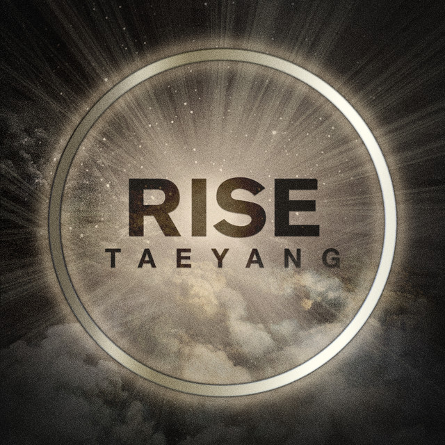
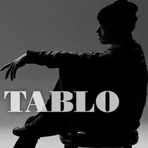
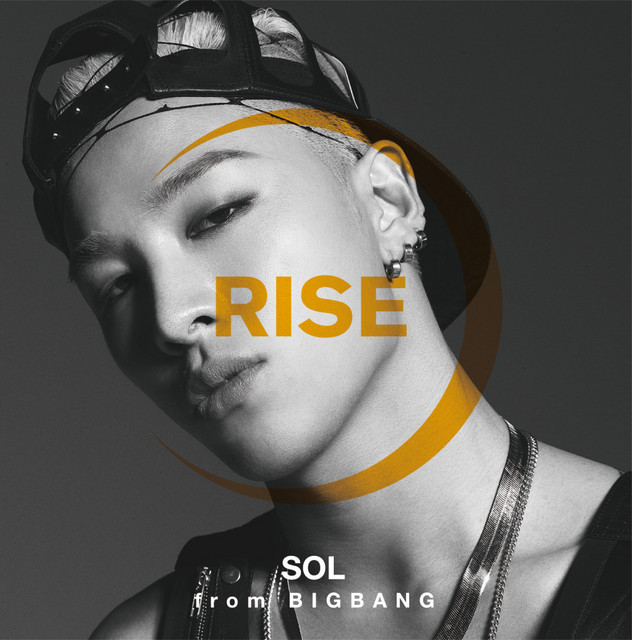

TAEYANG 东永裴
2014年
2014年1月12日
太阳 被 TC Candler 评选为：
- The 100 Most Handsome Faces of 2013：排名第33
2014年2月18日
太阳 在 Soompi Awards 2013 赢得：
- Best Choreography Award: Ringa Linga
2014年3月22日
Simply K-pop Tour 2014 上海
太阳个人参与
- I Need A Girl + Only Look At Me + Ringa Linga
2014年3月26日
太阳参与m-flo的专辑FUTURE IS NOW
演唱Go Crazy
2014年4月11日
Simply K-pop Tour 2014 上海
太阳宣传短片采访

Eyes Nose Lips 花絮
1AM 花絮
Ringa Linga 舞蹈室
2014年6月7日
太阳 在 Gaon Chart Music 获得：
第24周
- #1 Eyes, Nose, Lips
- #11 1AM
- #19 This Isn't It
- #20 Body
- #21 Let Go
- #22 LOVE YOU TO DEATH
详细资讯： Gaon

Japan：SOL Japan Concert Tour《Rise》
| 2014年8月12-13日 | 大阪 |
| 2014年8月17-18日 | 横滨 |
| 2014年8月20-21日 | 神户 |
| 2014年8月23-24日 | 福冈 |
| 2014年8月26日 | 滨松 |
| 2014年8月27日 | 东京 |
| 2014年9月1日 | 横滨 |
| 2014年9月3-4日 | 大阪 |

下面的视频来自@Jeompark-P 点击进入观看完整视频
2014年8月27日
Rise Tour
日本东京
South Korea：Rise Seoul Concert Series
| 2014年10月10-12日 | 首尔 |
下面的视频来自@跳跳鱼不见了呢 点击进入观看完整视频
2014年10月12日
首尔（第三天）
Rich
Eyes Nose Lips
2014年10月21日
太阳参与Epik High的专辑SHOEBOX
2014年11月13日
太阳 在 Melon Music Awards 获得：
- Top 10（赢）
- Best R&B/Soul Award: Eyes, Nose, Lips（被提名）
- Song of the Year: Eyes, Nose, Lips（赢）
- Artist of the Year（被提名）
- Album of the Year（被提名）
详细资讯： Soompi

2014年12月3日
太阳 在 MAMA Awards 获得：
- Song of the Year: Eyes, Nose, Lips（赢）
- Best Vocal Performance - Male（赢）
- Best Male Artist（赢）
- Artist of the Year（被提名）
详细资讯： MAMA
下面的视频来自@GDTOP百度知道团队 点击进入观看完整视频
2014年12月3日
cut
Body
1AM
- 00:10 太阳脱外套后下楼梯就摔倒了
Eyes Nose Lips
2014年12月28日
太阳 被 TC Candler 评选为：
- The 100 Most Handsome Faces of 2014：排名第61